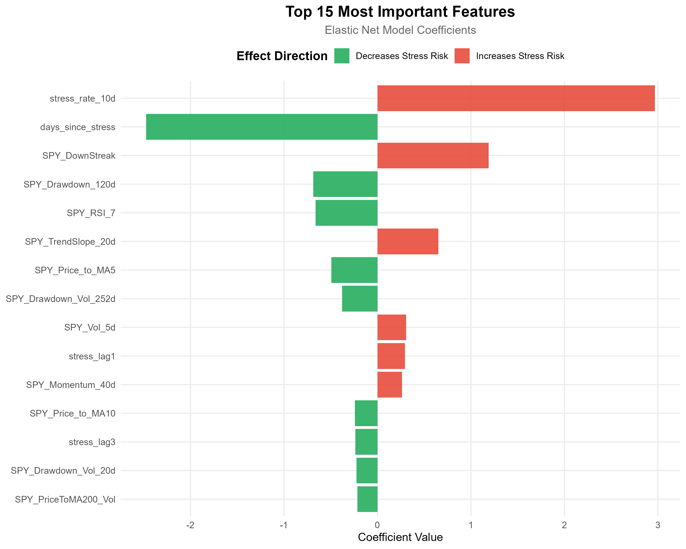

Understanding Stress vs Normal Market Conditions
📊 What is Market Stress?
Market Stress represents periods of heightened uncertainty, volatility, and negative market sentiment.
These are times when the SPY ETF experiences significant downward pressure, increased volatility, or sustained
negative momentum that could impact portfolio performance.
Stress Period Criteria
A market period is classified as STRESS when 2 or more of the following conditions are met simultaneously:
| Indicator |
Stress Threshold |
What It Means |
| Drawdown |
≥ 5% decline from recent peak |
Market has fallen significantly from recent highs, indicating potential weakness |
| Volatility |
20-day volatility > 2% daily |
Large daily price swings indicating uncertainty and fear in the market |
| Consecutive Losses |
3+ consecutive down days |
Sustained selling pressure and negative momentum |
| VIX Level |
VIX > 20 |
Fear index elevated, indicating market participants expect volatility |
| Volume Spike |
Volume > 150% of 20-day average |
Unusual trading activity often accompanies stress events |
✅ What is Normal Market Condition?
Normal Market Conditions represent stable, orderly market behavior where the SPY ETF trades
within expected ranges with moderate volatility. These periods are characterized by regular price movements,
controlled volatility, and absence of panic-driven selling or extreme uncertainty.
Normal Period Characteristics
- Stable Drawdowns: Corrections are shallow (< 5%) and typically recover quickly
- Low Volatility: Daily price movements within typical ranges (< 2% volatility)
- Balanced Momentum: Mix of up and down days without sustained losing streaks
- VIX Below 20: Fear index at normal levels indicating market confidence
- Normal Volume: Trading activity within expected ranges
💡 Model Interpretation: The machine learning model uses these fundamental definitions
as a starting point but analyzes 72 sophisticated features to detect stress conditions
more accurately than rule-based systems. The model learns complex patterns and interactions between
features that may not be obvious from simple threshold rules.
5. Feature Importance & Detailed Explanations
📌 Color Legend:
RED = Increases stress risk when value is high (warning indicators)
GREEN = Decreases stress risk (protective factors)

📊 Detailed Feature Explanations
Understanding what drives the model's stress predictions:
stress_rate_10d
Rate of stress occurrence over past 10 days - measures recent stress frequency and clustering
⚠️ Increases stress risk when value is high
Coefficient: 2.9675
days_since_stress
Number of days since last stress event - longer periods indicate market stability
✅ Protective factor - decreases stress risk
Coefficient: -2.4742
SPY_DownStreak
Consecutive down days - extended losing streaks signal deteriorating sentiment
⚠️ Increases stress risk when value is high
Coefficient: 1.1889
SPY_Drawdown_120d
Maximum decline from 120-day peak - measures severe long-term weakness
✅ Protective factor - decreases stress risk
Coefficient: -0.6855
SPY_RSI_7
7-day Relative Strength Index - oversold conditions (RSI < 30) can precede stress
✅ Protective factor - decreases stress risk
Coefficient: -0.6615
SPY_TrendSlope_20d
Slope of 20-day price trend - negative slopes increase stress probability
⚠️ Increases stress risk when value is high
Coefficient: 0.6526
SPY_Price_to_MA5
Current price relative to 5-day moving average - short-term trend indicator
✅ Protective factor - decreases stress risk
Coefficient: -0.4925
SPY_Drawdown_Vol_252d
Annual volatility of drawdowns - consistency and severity of declines
✅ Protective factor - decreases stress risk
Coefficient: -0.3777
SPY_Vol_5d
5-day rolling volatility - captures immediate market turbulence
⚠️ Increases stress risk when value is high
Coefficient: 0.3071
stress_lag1
Whether yesterday was a stress day - captures immediate momentum and persistence
⚠️ Increases stress risk when value is high
Coefficient: 0.2955
SPY_Momentum_40d
40-day momentum indicator - sustained directional price movement
⚠️ Increases stress risk when value is high
Coefficient: 0.2621
SPY_Price_to_MA10
Price relative to 10-day moving average - medium-term trend position
✅ Protective factor - decreases stress risk
Coefficient: -0.2410
stress_lag3
Stress status 3 days ago - identifies sustained stress patterns
✅ Protective factor - decreases stress risk
Coefficient: -0.2350
SPY_Drawdown_Vol_20d
Recent drawdown volatility - captures current market instability
✅ Protective factor - decreases stress risk
Coefficient: -0.2237
SPY_PriceToMA200_Vol
Advanced technical indicator derived from SPY price and volume data
✅ Protective factor - decreases stress risk
Coefficient: -0.2139
💡 Key Takeaway: The model primarily responds to recent stress patterns, market drawdowns, and momentum indicators. When multiple risk factors align simultaneously, stress probability increases dramatically.
10. Current Market Assessment
📅 Latest Market Analysis: This assessment is based on the most recent SPY market data
available in the system and uses all 72 model features to calculate stress probability.
Assessment Date
2025-10-23
Stress Probability
0.0021%
Threshold: 10%
Market Classification
NON-STRESS
✓ Normal Market Conditions
Current assessment indicates normal conditions. Standard positioning may be maintained.
What This Means
The model classifies current market conditions as NORMAL. Stress indicators are within expected ranges, suggesting stable market conditions. Standard investment strategies and portfolio positioning may be maintained, though ongoing monitoring is always recommended.
Disclaimer & Risk Disclosure
⚠️ Risk Disclosure
This report is provided for informational and analytical purposes only. The stress detection system is a quantitative tool and should not be used as the sole basis for investment decisions.
📋 No Investment Advice
Nothing in this report constitutes investment advice. The information does not account for your individual circumstances. Seek independent professional advice before making decisions.
⚙️ Model Limitations
Past Performance: Historical performance is not indicative of future results.
Model Risk: All models have limitations. False positives and negatives may occur.
Market Changes: Model accuracy depends on market conditions remaining similar to training data.
⚖️ Liability Disclaimer
New Way Capital Advisory Limited, its officers, employees, and affiliates shall not be held liable for any losses, damages, or claims arising from use of this report or model.
📜 Regulatory Compliance
Users are responsible for ensuring compliance with all relevant laws and regulations in their jurisdiction.